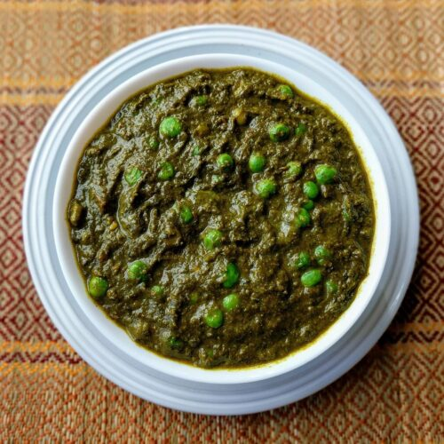
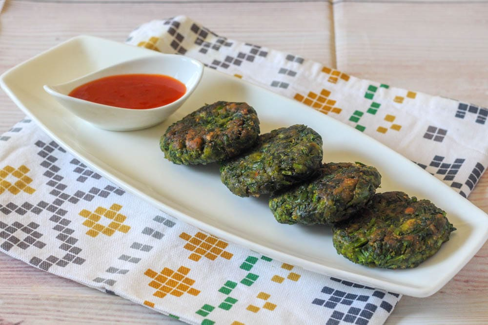
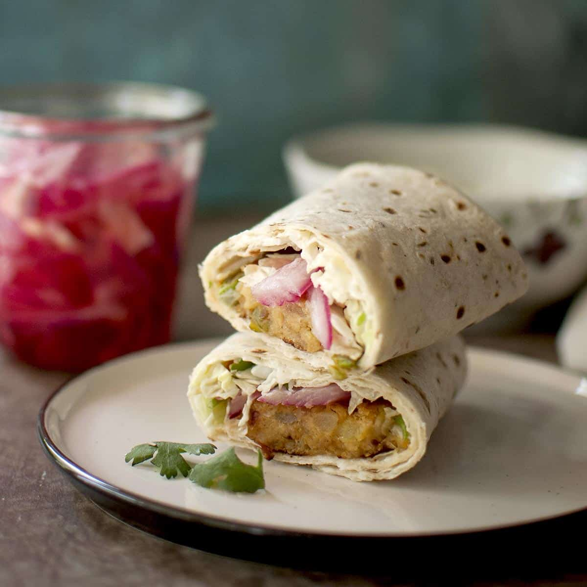
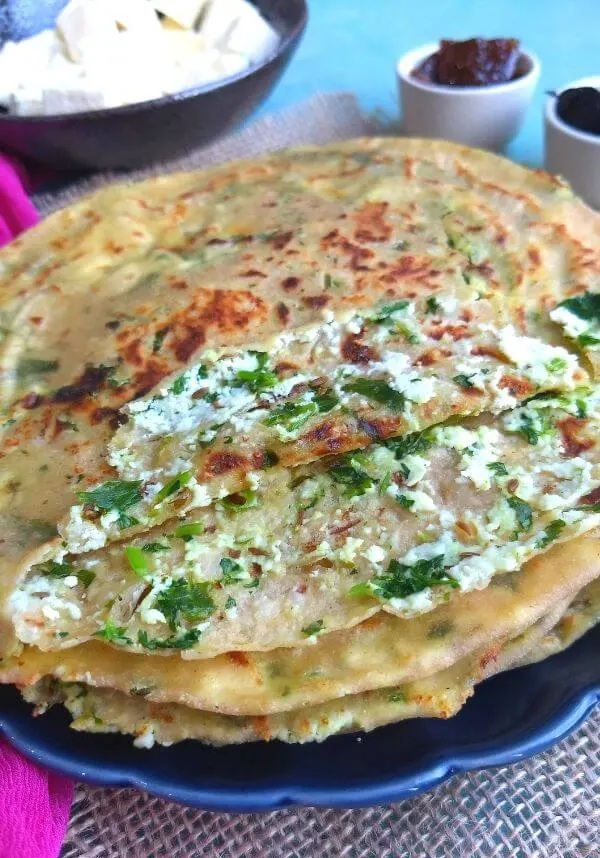
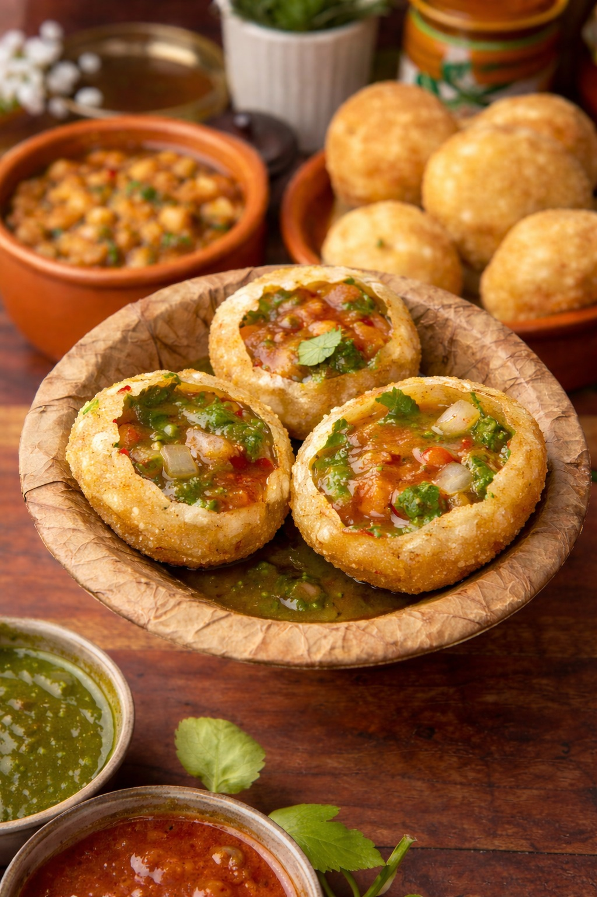
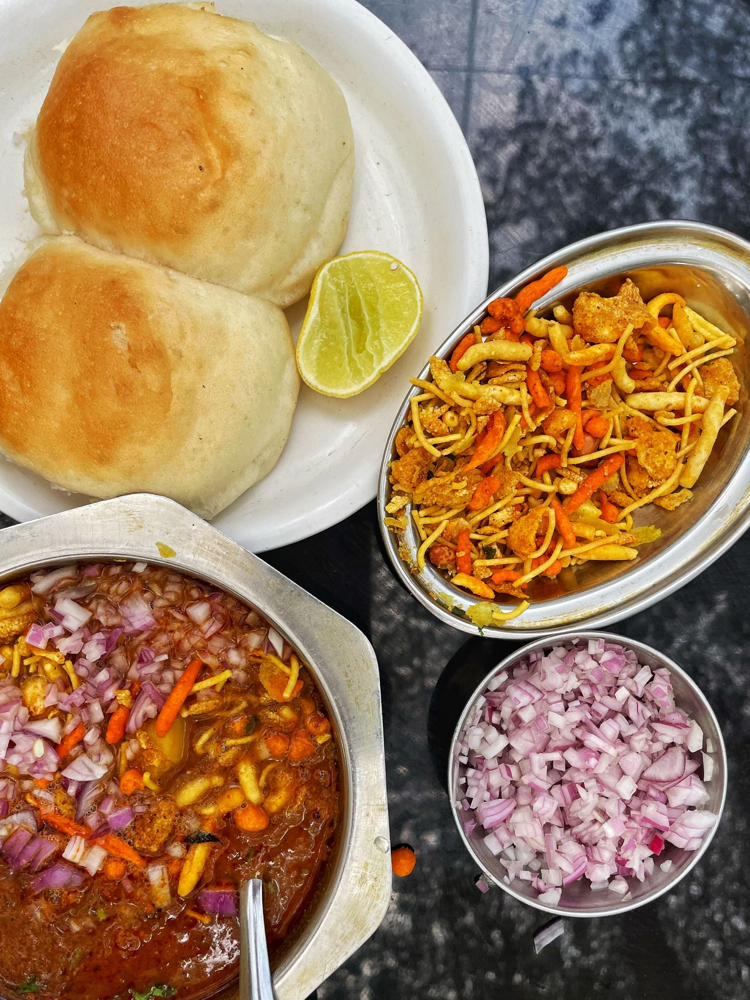
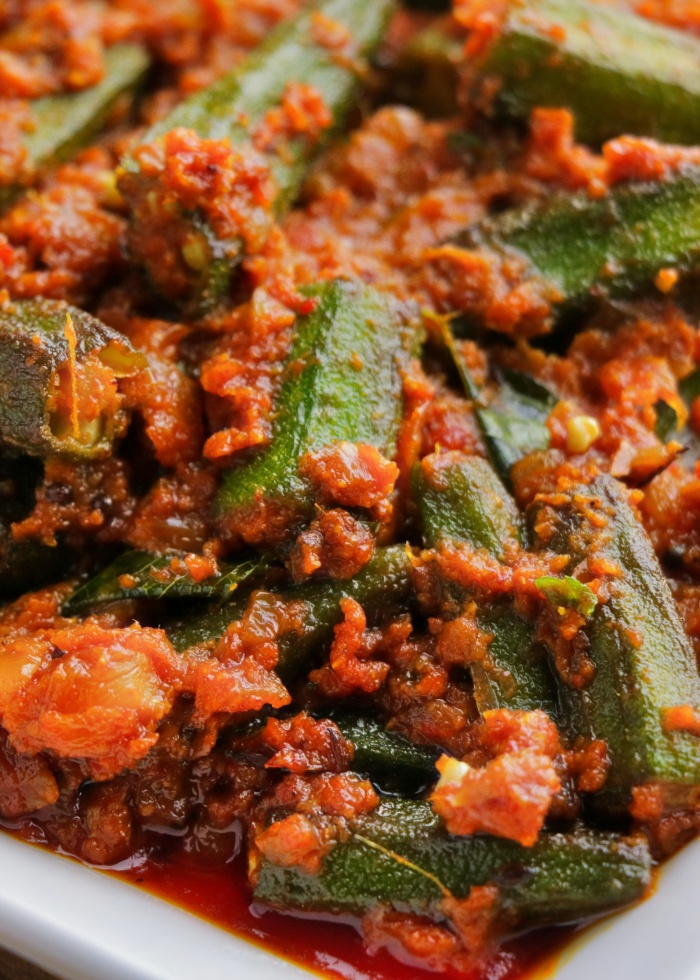
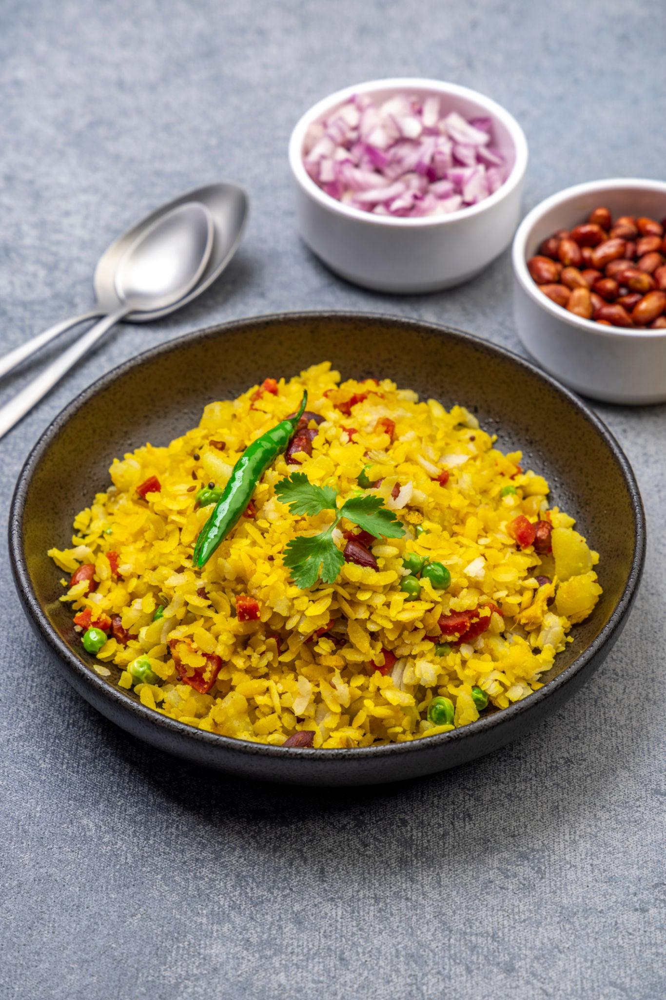

Delicious Homemade Recipes
Simple • Healthy • Tasty


Palak Tikki
Crispy spinach patties blended with potatoes, spices, and herbs — a healthy evening snack.
View Recipe
Chatpata Aloo Roll
Chatpata Aloo Roll is an easy, tasty, and kid-friendly snack made using soft chapatis 🫓 and a mildly spiced potato filling 🥔. Perfect for lunch boxes 🎒, evening snacks ☕, or quick meals.
View Recipe
Paneer Paratha (Stuffed)
Soft paneer-stuffed paratha 🫓 with mild spices 🌿—perfect for breakfast 🍳, tiffins 🎒, or a simple homemade meal 🧈.
View Recipe
Golgappa (Pani Puri)
Crispy golgappas filled with spicy potato stuffing and dipped in refreshing mint pani — a classic Indian street food loved by all 😍
View Recipe
Missal Pav
Misal Pav is a legendary Maharashtrian dish 🌶️ packed with bold spices, spicy rassa and wholesome sprouts.
View Recipe

Maharashtrian Poha
A light and comforting Maharashtrian breakfast made with soft poha, peanuts, onions, and gentle spices 🌾😊
View Recipe